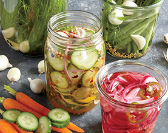
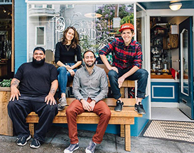
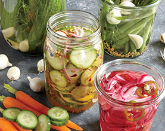
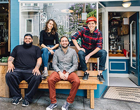

The Blue Goose is a story that all started in Liz’s kitchen and her experimentions with her Sunday AM Farmer’s Market finds. What started as a fun hobby soon became a full on obsession that led into an award winning cafe. The Blue Goose believes no fruit or vegetable should ever be unloved. And no dish should ever be un-pickled.
We think pickling is an art underated. Almost every cuisine has a pickled vegtable accenting their foods. Our menu incoporates foods with long standing traditions but with a farm to table twist update: Banh mi sandwich topped with pickled jalepenos and a healthy dose of cilantro chutney, crispy fish tacos with our spicy chipotle sauce and pickled cabbage slaw, whitefish salad with pickled ramps and radishes on a bed of baby kale. Quia doloriatet estruntur. cusam alit, quas sapideb itatest!

veggie of the month
Not your mom’s okra
With a coriander base and enough cayenne and red pepper flakes to kick the Winter blues away. Click here for more.
Visit us
72A Henry Street
Brooklyn, NY 11231
718.555.1919
HOURS
M-Fr 8am–9pm
Sa 10am–10pm
Su 10am–4pm
Book a table here
Hey! Wanna work with us? Honk at us